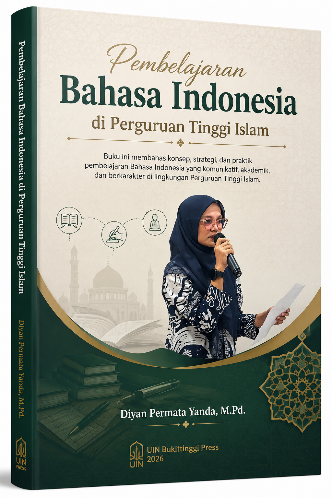
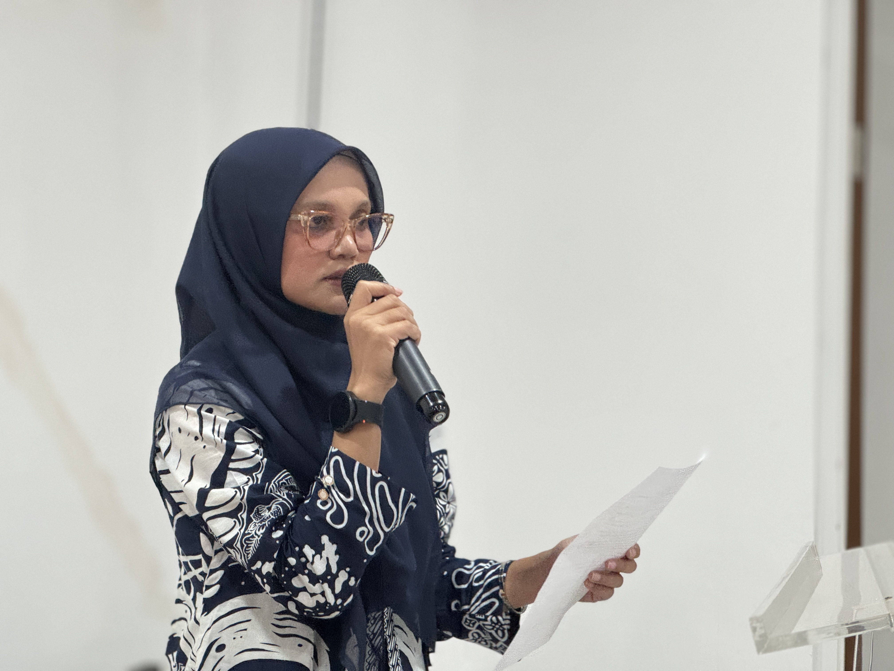

cover-buku.png
Silakan ganti file ini dengan cover buku Anda
Panduan komprehensif dan elegan dalam menguasai kaidah bahasa Indonesia akademik, penulisan ilmiah, hingga profesionalisme komunikasi bagi calon pendidik Islam.

photo-penulis.png
Dosen Pengembang RPS & Akademisi Bahasa
Berafiliasi dengan Universitas Islam Negeri Sjech M. Djamil Djambek Bukittinggi. Memiliki keahlian khusus dalam pengembangan kurikulum bahasa Indonesia berbasis Outcome-Based Education (OBE), penulisan akademik, serta integrasi nilai-nilai keislaman dalam komunikasi ilmiah modern.
diyan_yanda@yahoo.com16 bab terstruktur yang dirancang untuk membekali mahasiswa dengan kemampuan berbahasa Indonesia akademik dan profesional yang unggul.
Kontrak perkuliahan, lingkup materi, dan peta komposisi penilaian mata kuliah Bahasa Indonesia.
Sejarah perkembangan Bahasa Indonesia serta kedudukan dan fungsinya dalam konteks akademik dan profesional.
Identifikasi ragam bahasa berdasarkan media, waktu, sosial, fungsional, dan pesan komunikasi.
Penerapan kaidah ejaan bahasa Indonesia: penulisan huruf, kata, dan tanda baca secara tepat.
Penerapan kaidah ejaan bahasa Indonesia dalam teks akademik secara konsisten dan koreksi kesalahan.
Penggunaan diksi, definisi, dan pemanfaatan kamus secara tepat dalam komunikasi tulis akademik.
Penerapan kaidah kalimat efektif dalam penulisan akademik: unsur, ciri, dan perbaikan struktur.
Evaluasi penguasaan materi pertemuan 1-7: konsep dasar, ragam bahasa, ejaan, diksi, dan kalimat efektif.
Pola pengembangan paragraf akademik bertema Pendidikan Agama Islam (deduktif, induktif, campuran).
Menyusun esai akademik bertema Pendidikan Agama Islam dengan struktur runtut dan argumen logis.
Konsep, wujud, dan struktur karangan ilmiah sederhana beserta pemanfaatan sumber pustaka.
Aplikasi Mendeley untuk sitasi otomatis dan analisis dampak plagiarisme dalam dunia akademik.
Analisis struktur dan ciri artikel ilmiah serta praktik penyusunan artikel sederhana bertema PAI.
Evaluasi dan presentasi artikel ilmiah dengan bahasa Indonesia yang jelas, sopan, dan memikat audiens.
Merancang surat lamaran kerja, CV, dan menerapkan etika wawancara kerja secara efektif.
Evaluasi penguasaan komprehensif seluruh materi: esai, karya ilmiah, presentasi, dan dokumen profesional.